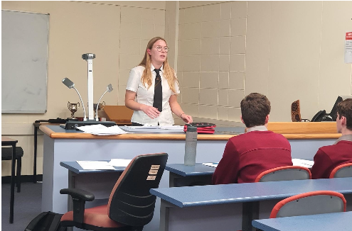

Past Championns
Our senior comptative debaters Jumana, Charlie and Bianca who are also the Senior leaders who teach our junior team, are absolutly amazing debaters and have made hghs very proud by accomplising great results and previous championships!
Tips and Tricks
Pick a clear claim: Stick to your core argument instad of wondering off and talking about unnessacry issues.
Use the rule of three: Create your speech around 3 core arguemnets, and always ask to yourself "WHY".
Anticipate flaws: Be aware of your weak pointers in your case so you can prepare beforehand for rebuttal
There are four roles in doing debate/ building a team
1st speaker: addresses all the key points and stake holder, and further developes on one or two main points.
2nd speaker: starts with rebuttal for the opposition team and then explains and expands on the last and final point.
3rd speaker: rebutts to all the statements passed from the opposition team.
Leaders reply: concludes the whole debate, but only the first or second speaker can do the leaders reply.

General Debate Tips
- have a strucutre to your speech
- Dont get hesitent
- Always ask yourself WHY
- Intimidate the other team (joking)
- speak with confidence